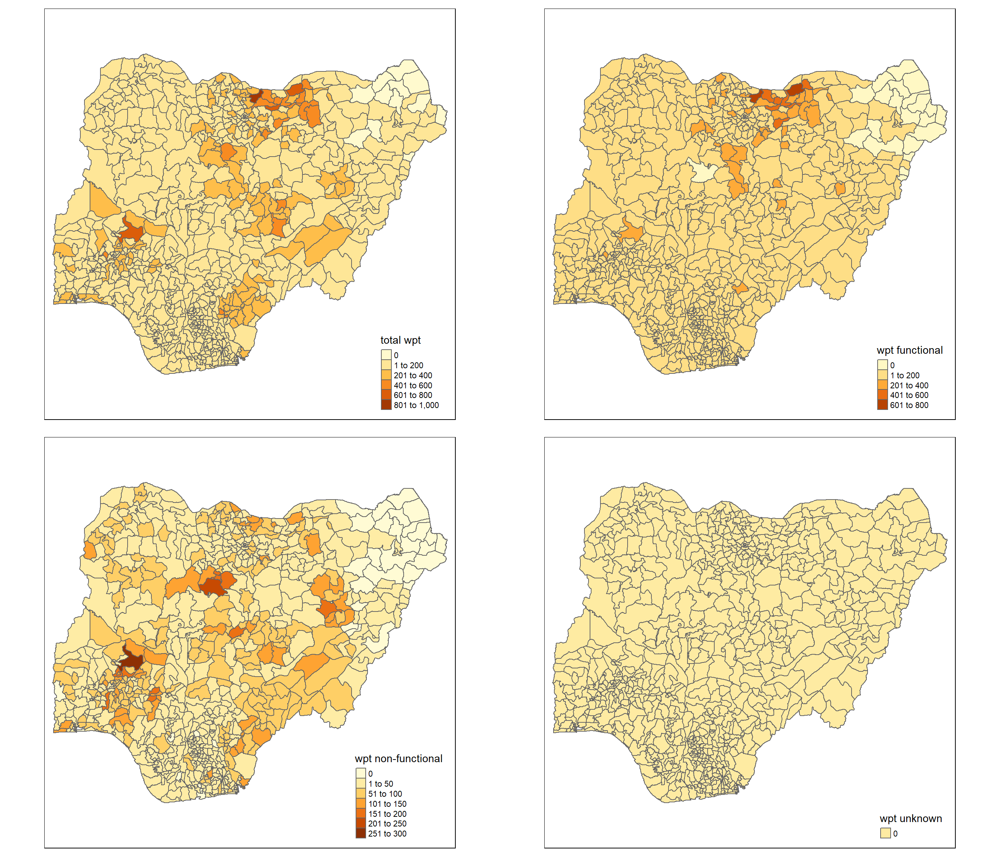
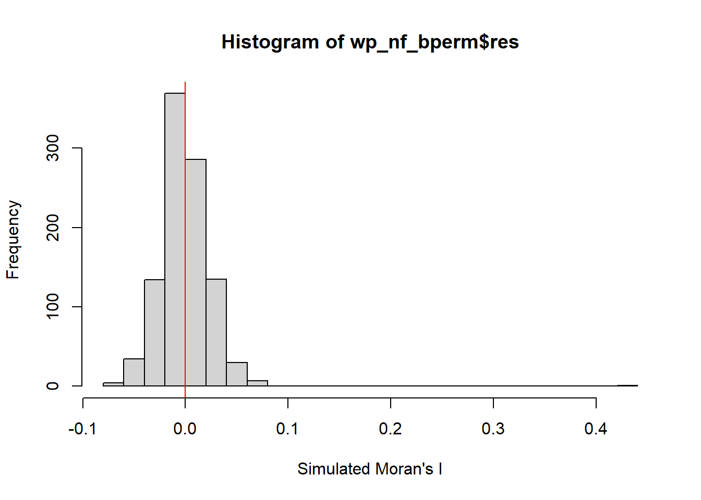

pacman::p_load(sf, tidyverse, tmap, spdep, funModeling)Take-home Exercise 1: Analysing and Visualising Spatial Patterns of Non-Functional Water Points
Overview
Background
Problem Statement
Are development evenly distributed in Nigeria?
Is there sign of spatial clustering?
Getting Started
In the code chunk below, p_load() of pacman package is used to install and load the following R packages into R environment:
sf: used for importing, managing, and processing geospatial data
tidyverse: a collection of packages for data science tasks
tmap: used for creating thematic maps, such as choropleth and bubble maps
spdep: used to compute spatial weights, global and local spatial autocorrelation statistics, and
funModeling: used for rapid Exploratory Data Analysis
Importing Geospatial Data
Two geospatial data sets will be used, they are:
geo_export
nga_admbnda_adm2_osgof_20190417
Importing water point geospatial data
First, we are going to import the water point geospatial data (i.e. geo_export) by using the code chunk below.
wp <- st_read(dsn = "geodata",
layer = "geo_export",
crs = 4326) %>%
filter(clean_coun == "Nigeria")Things to learn from the code chunk above:
st_read()of sf package is used to import geo_export shapefile into R environment and save the imported geospatial data into simple feature data table.filter()of dplyr package is used to extract water point records of Nigeria.
Be warned: Avoid performing transformation if you plan to use
st_intersects()of sf package in the later stage of the geoprocessing. This is becausest_intersects()only works correctly if the geospatial data are in geographic coordinate system (i.e. wgs84)
Next, write_rds() of readr package is used to save the extracted sf data table (i.e. wp) into an output file in rds data format. The output file is called wp_nga.rds and it is saved in geodata sub-folder.
wp_nga <- write_rds(wp,
"geodata/wp_nga.rds")Importing Nigeria LGA boundary data
nga <- st_read(dsn = "geodata",
layer = "nga_admbnda_adm2_osgof_20190417",
crs = 4326)Reading layer `nga_admbnda_adm2_osgof_20190417' from data source
`C:\chenfx91\ISSS624\Take-home_Ex\Take-home_Ex1\geodata' using driver `ESRI Shapefile'
Simple feature collection with 774 features and 16 fields
Geometry type: MULTIPOLYGON
Dimension: XY
Bounding box: xmin: 2.668534 ymin: 4.273007 xmax: 14.67882 ymax: 13.89442
Geodetic CRS: WGS 84Thing to learn from the code chunk above.
st_read()of sf package is used to import nga_admbnda_adm2_osgof_20190417 shapefile into R environment and save the imported geospatial data into simple feature data table.
Data Wrangling
Recoding NA values into string
wp_nga <- read_rds("geodata/wp_nga.rds") %>%
mutate(status_cle = replace_na(status_cle,"unknown"))EDA
In the code chunk below, freq() of funModeling package is used to display the distribution of status_cle field in wp_nga.
freq(data=wp_nga,
input = 'status_cle')Warning: `guides(<scale> = FALSE)` is deprecated. Please use `guides(<scale> =
"none")` instead.
status_cle frequency percentage cumulative_perc
1 Functional 45883 48.29 48.29
2 Non-Functional 29385 30.93 79.22
3 unknown 10656 11.22 90.44
4 Functional but needs repair 4579 4.82 95.26
5 Non-Functional due to dry season 2403 2.53 97.79
6 Functional but not in use 1686 1.77 99.56
7 Abandoned/Decommissioned 234 0.25 99.81
8 Abandoned 175 0.18 99.99
9 Non functional due to dry season 7 0.01 100.00Extracting Water Point Data
In this section, we will extract the water point records by using classes in status_cle field.
Extracting functional water point
In the code chunk below, filter() of dplyr is used to select functional water points.
wpt_functional <- wp_nga %>%
filter(status_cle %in%
c("Functional",
"Functional but not in use",
"Functional but needs repair"))freq(data=wpt_functional,
input = 'status_cle')Warning: `guides(<scale> = FALSE)` is deprecated. Please use `guides(<scale> =
"none")` instead.
status_cle frequency percentage cumulative_perc
1 Functional 45883 87.99 87.99
2 Functional but needs repair 4579 8.78 96.77
3 Functional but not in use 1686 3.23 100.00Extracting non-functional water point
wpt_nonfunctional <- wp_nga %>%
filter(status_cle %in%
c("Abandoned/Decommissioned",
"Abandoned",
"Non-Functional",
"Non functional due to dry season",
"Non-Functional due to dry season"))freq(data=wpt_nonfunctional,
input = 'status_cle')Warning: `guides(<scale> = FALSE)` is deprecated. Please use `guides(<scale> =
"none")` instead.
status_cle frequency percentage cumulative_perc
1 Non-Functional 29385 91.25 91.25
2 Non-Functional due to dry season 2403 7.46 98.71
3 Abandoned/Decommissioned 234 0.73 99.44
4 Abandoned 175 0.54 99.98
5 Non functional due to dry season 7 0.02 100.00Extracting water point with unknown class
wpt_unknown <- wp_nga %>%
filter(status_cle == "Unknown")Performing Point-in-Polygon Count
nga_wp <- nga %>%
mutate(`total wpt` = lengths(
st_intersects(nga, wp_nga))) %>%
mutate(`wpt functional` = lengths(
st_intersects(nga, wpt_functional))) %>%
mutate(`wpt non-functional` = lengths(
st_intersects(nga, wpt_nonfunctional))) %>%
mutate(`wpt unknown` = lengths(
st_intersects(nga, wpt_unknown)))Saving the Analytical Data Table
nga_wp <- nga_wp %>%
mutate(pct_functional = `wpt functional`/`total wpt`) %>%
mutate(`pct_non-functional` = `wpt non-functional`/`total wpt`) %>%
select(3:4, 9:10, 18:23)Things to learn from the code chunk above:
mutate()of dplyr package is used to derive two fields namely pct_functional and pct_non-functional.to keep the file size small,
select()of dplyr is used to retain only field 3,4,9,10, 18,19,20,21,22,and 23.
Now, you have the tidy sf data table subsequent analysis. We will save the sf data table into rds format.
write_rds(nga_wp, "geodata/nga_wp.rds")Visualising the spatial dsitribution of water points
nga_wp <- read_rds("geodata/nga_wp.rds")
total <- qtm(nga_wp, "total wpt")
wp_functional <- qtm(nga_wp, "wpt functional")
wp_nonfunctional <- qtm(nga_wp, "wpt non-functional")
unknown <- qtm(nga_wp, "wpt unknown")
tmap_arrange(total, wp_functional, wp_nonfunctional, unknown, asp=1, ncol=2)
Global Spatial Autocorrelation
Computing Contiguity Spatial Weights
wp_wm_q <- poly2nb(nga_wp,
queen = TRUE)
summary(wp_wm_q)Neighbour list object:
Number of regions: 774
Number of nonzero links: 4440
Percentage nonzero weights: 0.7411414
Average number of links: 5.736434
1 region with no links:
86
Link number distribution:
0 1 2 3 4 5 6 7 8 9 10 11 12 14
1 2 14 57 125 182 140 122 72 41 12 4 1 1
2 least connected regions:
138 560 with 1 link
1 most connected region:
508 with 14 linksThe summary report above shows that there are 774 area units in Nigeria. The most connected area unit has 14 neighbours. There are two area units with only one neighbours. There is 1 regoin with no links.
Row-standardised weights matrix
Next, we need to assign weights to each neighboring polygon. In our case, each neighboring polygon will be assigned equal weight (style=“W”). This is accomplished by assigning the fraction 1/(#ofneighbors) to each neighboring county then summing the weighted income values. While this is the most intuitive way to summaries the neighbors’ values it has one drawback in that polygons along the edges of the study area will base their lagged values on fewer polygons thus potentially over- or under-estimating the true nature of the spatial autocorrelation in the data. For this example, we’ll stick with the style=“W” option for simplicity’s sake but note that other more robust options are available, notably style=“B”.
From the above, we know that there is one area has no neighbours, hence, the below code chunk includes codes to exclude the region with no links.
wp_rswm_q <- nb2listw(wp_wm_q,
style = "W",
zero.policy = TRUE)
print(nb2listw(neighbours = wp_wm_q, zero.policy = TRUE), zero.policy = TRUE)Characteristics of weights list object:
Neighbour list object:
Number of regions: 774
Number of nonzero links: 4440
Percentage nonzero weights: 0.7411414
Average number of links: 5.736434
1 region with no links:
86
Weights style: W
Weights constants summary:
n nn S0 S1 S2
W 773 597529 773 285.0658 3198.414get.ZeroPolicyOption()[1] FALSEset.ZeroPolicyOption(TRUE)[1] FALSEget.ZeroPolicyOption()[1] TRUEwp_rswm_qCharacteristics of weights list object:
Neighbour list object:
Number of regions: 774
Number of nonzero links: 4440
Percentage nonzero weights: 0.7411414
Average number of links: 5.736434
1 region with no links:
86
Weights style: W
Weights constants summary:
n nn S0 S1 S2
W 773 597529 773 285.0658 3198.414Global Spatial Autocorrelation: Moran’s I
Maron’s I test
The Null Hypothesis:
The non-functional water points are randomly distributed in Nigeria
moran.test(nga_wp$`wpt non-functional`,
listw=wp_rswm_q,
zero.policy = TRUE,
na.action=na.omit)
Moran I test under randomisation
data: nga_wp$`wpt non-functional`
weights: wp_rswm_q n reduced by no-neighbour observations
Moran I statistic standard deviate = 20.043, p-value < 2.2e-16
alternative hypothesis: greater
sample estimates:
Moran I statistic Expectation Variance
0.433932927 -0.001295337 0.000471516 From the p-value <2.2e-16, we reject the null hyphothesis at 95% significant level, and conclude that there is spatial pattern of non-functional water points in Nigeria.
Computing Monte Carlo Moran’s I
Conducting Monte Carlo Stimulation to further confirm on Moran’s I test.
set.seed(1234)
wp_nf_bperm= moran.mc(nga_wp$`wpt non-functional`,
listw=wp_rswm_q,
nsim=999,
zero.policy = TRUE,
na.action=na.omit)
wp_nf_bperm
Monte-Carlo simulation of Moran I
data: nga_wp$`wpt non-functional`
weights: wp_rswm_q
number of simulations + 1: 1000
statistic = 0.43393, observed rank = 1000, p-value = 0.001
alternative hypothesis: greaterFrom the above simulation, p-value = 0.001, we can confirm that the null hyphothesis is rejected at 95% significant level.
Visualising Monte Carlo Moran’s I
mean(wp_nf_bperm$res[1:999])[1] -0.0005316305var(wp_nf_bperm$res[1:999])[1] 0.0004973974summary(wp_nf_bperm$res[1:999]) Min. 1st Qu. Median Mean 3rd Qu. Max.
-0.0651127 -0.0150421 -0.0020783 -0.0005316 0.0143726 0.0798599 hist(wp_nf_bperm$res,
freq=TRUE,
breaks=20,
xlab="Simulated Moran's I")
abline(v=0,
col="red") 
some conclusions here:
Spatial Correlogram
Compute Moran’s I correlogram
In the code chunk below, sp.correlogram() of spdep package is used to compute a 6-lag spatial correlogram of GDPPC. The global spatial autocorrelation used in Moran’s I. The plot() of base Graph is then used to plot the output.
MI_corr_wp <- sp.correlogram(wp_wm_q,
nga_wp$`wpt non-functional`,
order=6,
method="I",
style="W")
plot(MI_corr_wp)
print(MI_corr_wp)Spatial correlogram for nga_wp$`wpt non-functional`
method: Moran's I
estimate expectation variance standard deviate Pr(I) two sided
1 (773) 4.3393e-01 -1.2953e-03 4.7152e-04 20.0433 < 2.2e-16
2 (773) 2.6647e-01 -1.2953e-03 2.0206e-04 18.8374 < 2.2e-16
3 (773) 1.9507e-01 -1.2953e-03 1.2189e-04 17.7863 < 2.2e-16
4 (773) 1.4019e-01 -1.2953e-03 8.7589e-05 15.1181 < 2.2e-16
5 (773) 6.3735e-02 -1.2953e-03 6.8779e-05 7.8413 4.459e-15
6 (773) 2.1698e-02 -1.2953e-03 5.7380e-05 3.0354 0.002402
1 (773) ***
2 (773) ***
3 (773) ***
4 (773) ***
5 (773) ***
6 (773) **
---
Signif. codes: 0 '***' 0.001 '**' 0.01 '*' 0.05 '.' 0.1 ' ' 1some conclusions here:
Cluster and Outlier Analysis
Computing local Moran’s I
fips_wp <- order(nga_wp$ADM2_EN)
localMI_wp <- localmoran(nga_wp$`wpt non-functional`, wp_rswm_q)
head(localMI_wp) Ii E.Ii Var.Ii Z.Ii Pr(z != E(Ii))
1 -0.32365786 -9.995243e-04 1.924638e-01 -0.73547576 0.46204980
2 0.07000542 -4.092463e-05 1.053077e-02 0.68258288 0.49487045
3 1.25819985 -1.627684e-03 4.181728e-01 1.94819847 0.05139122
4 -0.03537489 -5.427505e-05 5.954304e-03 -0.45773361 0.64714384
5 0.01201533 -2.590965e-04 3.988998e-02 0.06145673 0.95099547
6 0.00768085 -1.538445e-07 1.687859e-05 1.86960486 0.06153871The code chunk below list the content of the local Moran matrix derived by using printCoefmat().
There are some duplicated names in ADM2_EN, we need to consolidate the duplicated names.
table(duplicated(nga_wp$ADM2_EN))
FALSE TRUE
768 6 #printCoefmat(data.frame(
#localMI_wp[fips_wp,],
#row.names=nga_wp$ADM2_EN[fips_wp]),
#check.names=FALSE)